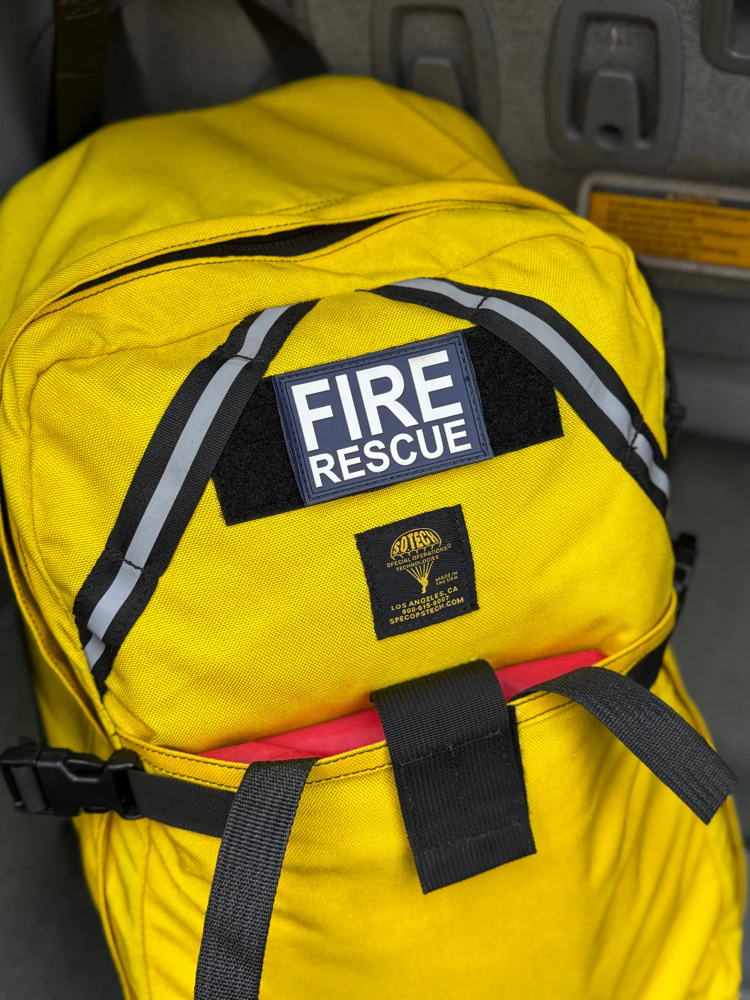

Below is a list of things to put in your go-bag. Make sure that it is not too heavy, but you have everything important with you. Check off each item once you have put it in your bag. Try to put more important things like a first aid kit, water, and masks in more accessible areas.
GO-BAG
Go-Bag Checklist
